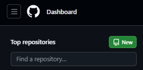
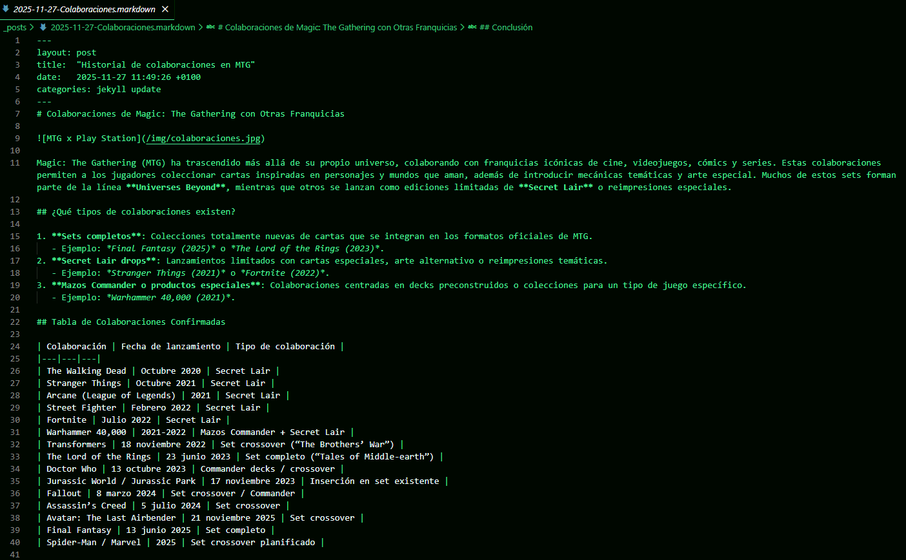
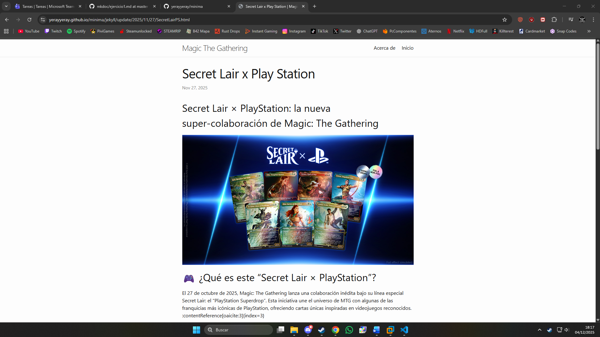

Ejercicio 1: Creación de un sitio web en Jekyll con el tema Minima
1. Actualizar Debian 13
Antes de nada, hay que actualizar debian para que no esté desactualizado:
sudo apt update && sudo apt upgrade -y
2. Instalación de Ruby y Jekyll
Ruby:
Instalar Ruby y los paquetes necesarios:
sudo apt install ruby-full build-essential zlib1g-dev -y
Añadir al .bashrc la variable de entorno GEM_HOME para que las gemas se instalen en ~/gems:
echo 'export GEM_HOME="$HOME/gems"' >> ~/.bashrc
Añadir al .bashrc una línea que incluya el directorio de binarios de gemas en el PATH:
echo 'export PATH="$HOME/gems/bin:$PATH"' >> ~/.bashrc
Recarga el archivo .bashrc para aplicar los cambios:
source ~/.bashrc
Jekyll:
Instalar las gemas jekyll y bundler en tu sistema:
gem install jekyll bundler
3. Crear el sitio:
Crear el sitio en jekyll:
Crear un nuevo sitio Jekyll llamado minima con la estructura básica inicial:
jekyll new minima
4. Crear el repositorio en git:
Primero hay que crear el repositorio en local con Git mediante los comandos:
git init
git remote add origin "https://github.com/yerayyeray/minima.git"
Ahora hay que crear el repositorio en GitHub:



5. Configuración del sitio:
Iniciar el servidor local de Jekyll usando las dependencias del proyecto y lo hace accesible desde mi maquina fisica a traves de la url http://localhost:4000 y poder observar los cambios que se hagan en el sitio para que esté listo antes de subirlo a mir repositorio de github:
bundle exec jekyll serve --host 0.0.0.0
Modificar el archivo de configuración del sitio:
El archivo _config.yml sirve para definir la configuración global de tu sitio Jekyll, como título, tema, URL y ajustes generales y para personalizar el sitio con nuestros datos, hay que rellenar los campos con nuestros datos

Modificar la pantalla de inicio del sitio:
Para modificar el la pagina principal del sitio, hay que modificar el archivo index.markdown con la estructura e información del sitio web que se quiere crear

Modificar la pagina de "Acerca de" en el sitio:
La pagina de "Acerca de" se pude modificar en el archivo about.markdown en el que hay que poner información sobre lo que se va a encontrar en el sitio web o sobre su autor etc.

Añadir los posts al sitio:
Para crear los posts de este blog, hay que ir a la carpeta /_posts

Crear archivos de markdown con el formato de nombre año-mes-dia-nombre_del_post, como por ejemplo en mi caso 2025-11-27-Colaboraciones.markdown y los post tendran que tener una estructura como esta:

6. Subir el sitio a GitHub Pages:
Hay que subir el repositorio primero hay que hacer los commits de todos los cambios que se han hecho en el repositorio si no se han hecho con los comandos:
git add .
git commit -m "comentario"
Si se quiere subir directamente a GitHub Pages se puede hacer subiendolo al remoto desde la rama gh-pages, la cual se puede crear así:
git checkout -b gh-pages
Si no se hace así, se puede hacer desde la interfaz de GitHub desde aquí:

Despues, se hara el push con el comando:
git push origin gh-pages
7. Sitio web subido en GitHub Pages:
La url de la pagina es esta:
https://yerayyeray.github.io/minima/
Este es el aspecto que tiene el sitio web ya subido en GitHub Pages:
Inicio:

Acerca de:

Posts:
